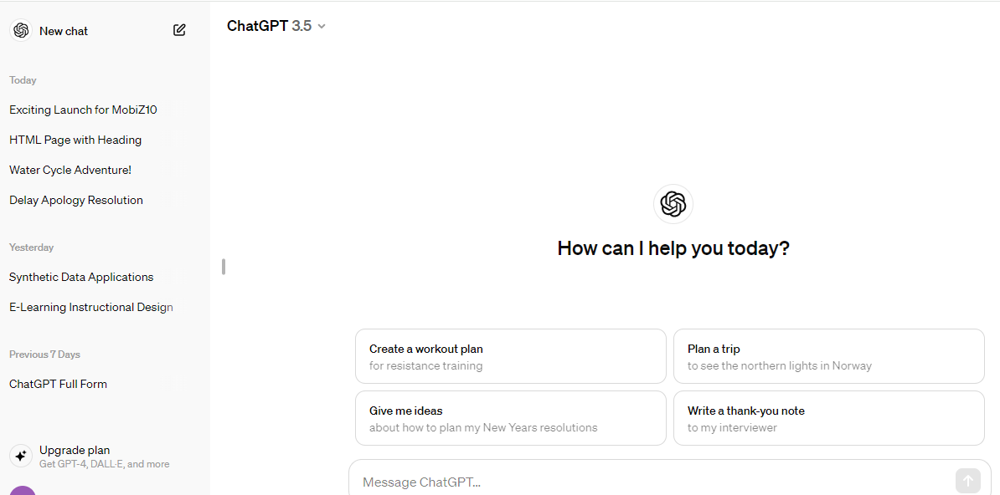
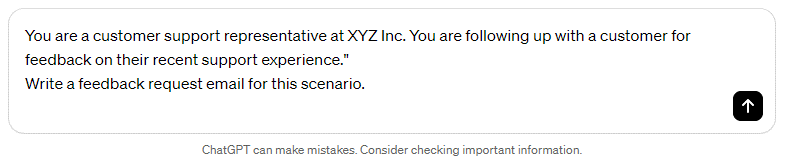
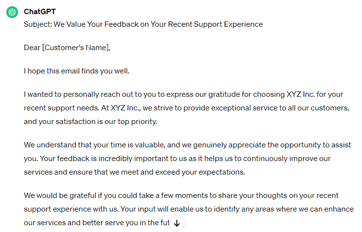
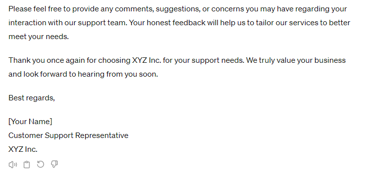

Trình Tạo Văn Bản 📑
- Cốt lõi của các khả năng tạo văn bản của AI tổng quát là các mô hình ngôn ngữ lớn hoặc LLM. Dựa trên các mẫu và cấu trúc đã học trong quá trình đào tạo, LLM diễn giải bối cảnh, ngữ pháp và ngữ nghĩa để tạo ra văn bản phù hợp và theo ngữ cảnh. Vẽ mối quan hệ thống kê giữa các từ và cụm từ cho phép LLM điều chỉnh các phong cách viết sáng tạo cho bất kỳ ngữ cảnh nào. LLM là cơ sở cho nhiều mô hình tạo văn bản. Hai ví dụ như vậy là mô hình máy biến áp được đào tạo trước hoặc GPT và Gemini AI. Những mô hình này đã phát triển thành các mô hình đa phương thức cung cấp nhiều khả năng.
- 📖 LLM diễn giải bối cảnh, ngữ pháp và ngữ nghĩa để tạo văn bản mạch lạc và phù hợp theo ngữ cảnh. LLM là cơ sở cho nhiều công cụ tạo văn bản. Hai công cụ tạo văn bản phổ biến là TATGPT của Openai và Google Gemini. Chatgpt dựa trên GPT và Gemini dựa trên các mô hình AI Gemini. Cả Chatgpt và Gemini đều có thể tạo ra các loại văn bản khác nhau, dịch ngôn ngữ và trả lời câu hỏi của bạn theo cách tương tác và thông tin. Một số công cụ khác mà chúng tôi đã nói đến bao gồm Jasper, Copy.ai, Writesonic. Các trình tạo văn bản bảo tồn quyền riêng tư nguồn mở bao gồm GPT4All, H2O.AI và Priventpt.
- Các trình tạo văn bản dựa trên AI tổng quát cung cấp một số lợi ích. Những công cụ này là các công cụ học tập tốt vì chúng cung cấp các giải thích từng bước. Họ có thể tạo ra các hình thức văn bản khác nhau một cách nhanh chóng, cho phép hiệu quả cho các nhà văn và người sáng tạo. Những công cụ này tăng cường sự sáng tạo và truyền cảm hứng cho những ý tưởng mới. Bằng cách cho phép các cuộc trò chuyện tương tác và tương tác, chúng hữu ích với tư cách là trợ lý ảo và chatbots. Bằng cách tự động hóa các nhiệm vụ viết lặp đi lặp lại, họ có thể tăng năng suất cho các tổ chức. Với sự hỗ trợ đa ngôn ngữ, chúng cho phép nội địa hóa giao tiếp và nội dung cho khán giả toàn cầu.
Chúng ta hãy tìm hiểu về khả năng của các mô hình này thông qua một công cụ phổ biến, Chatgpt. Chatgpt dựa trên GPT như một mô hình ngôn ngữ lớn và Sử dụng xử lý ngôn ngữ tự nhiên tiên tiến hoặc NLP. Mặc dù ban đầu Chatgpt chỉ lấy lời nhắc văn bản làm đầu vào để tạo nội dung mới, với các phiên bản mới hơn, nó có thể lấy cả đầu vào hình ảnh và văn bản. Chatgpt cung cấp các khả năng đa dạng để tạo văn bản. Nó có khả năng các cuộc trò chuyện trơn tru và dựa trên bối cảnh. Hãy bắt đầu một cuộc trò chuyện với Chatgpt để tìm hiểu một khái niệm. Nhập một lời nhắc cho biết, tôi đã nghe về AI tổng quát và muốn tìm hiểu thêm. Chatgpt trả lời với một số thông tin cơ bản dựa trên bối cảnh. Khi bạn thực hiện cuộc trò chuyện về phía trước để tinh chỉnh nghiên cứu bằng cách hỏi làm thế nào tôi có thể sử dụng AI tổng quát để cải thiện các kỹ năng kể chuyện của tôi, vì một nhà thờ nhanh chóng cung cấp câu trả lời dựa trên bối cảnh và câu hỏi do bạn cung cấp. Hãy thử nghiệm và hướng dẫn cuộc trò chuyện thêm. Chatgpt sẽ xây dựng một luồng đàm thoại thông tin và thú vị. Nó cũng có thể giúp bạn với các nhiệm vụ sáng tạo khác nhau.
Bước 1: Đăng Nhập Vào CHAT GPT.
Bước 2: Tạo một email theo lời yêu cầu.
Đây là ví dụ về việc tạo một đoạn email: "You are a customer support representative at XYZ Inc. You are following up with a customer for feedback on their recent support experience." Write a feedback request email for this scenario."
Kết Quả:
 